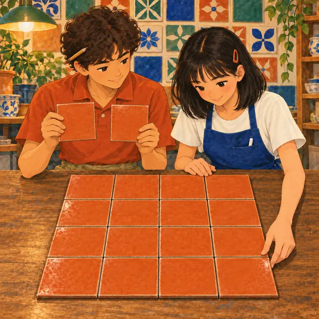
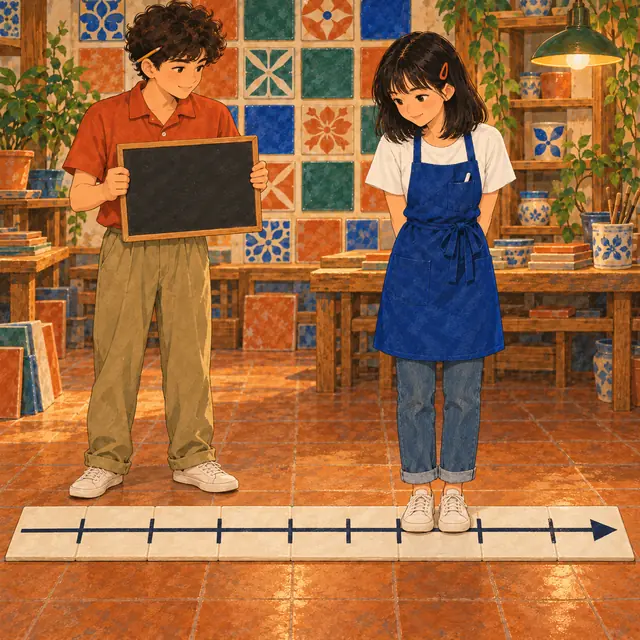

課前暖身漫畫：兩塊磚拼成一塊大正方形
小瓷手上有兩塊邊長 \(1\) 的方磚，她把兩塊都沿對角線切開，四個三角形剛好拼成一塊斜放的大正方形，面積是 \(2\)。阿岩拿尺一量，邊長大約 \(1.4\)——可是 \(1.4 \times 1.4 = 1.96\)，不是 \(2\)。這塊磚的邊長到底是多少？這一節就要找出答案。
重點 1：√a 的意義——面積是 a 的正方形邊長
重點整理與敘述
- 正方形面積 ＝ 邊長 × 邊長：面積 \(1\)、\(4\)、\(9\) 的正方形，邊長是 \(1\)、\(2\)、\(3\)。
- 面積 \(2\) 的正方形存在：四個一樣的直角三角形就拼得出來。設它的邊長是 \(m\)，則 \(m^2 = 2\)：
- \(1^2 \lt 2 \lt 2^2\)，所以 \(1 \lt m \lt 2\)，\(m\) 不是整數。
- \(1.4^2 = 1.96\)、\(1.5^2 = 2.25\)，所以 \(1.4 \lt m \lt 1.5\)，\(m\) 也不是一位小數。
- 再試下去也一樣：\(m\) 不是有限小數，也不是分數。
- 新符號：這個邊長寫成 \(\sqrt{2}\)，讀作「根號二」。面積 \(a\) 的正方形，邊長就是 \(\sqrt{a}\)。
- 例：\((\sqrt{7})^2 = 7\)，\(\left(\sqrt{\frac{3}{10}}\right)^2 = \frac{3}{10}\)，\((\sqrt{7.9})^2 = 7.9\)。
- 量出來的只是近似值：用尺量面積 \(2\) 的正方形邊長約 \(1.4\)，但 \(1.4^2 \ne 2\)，所以 \(1.4\) 不是 \(\sqrt{2}\) 本身。
視覺互動探索：方磚邊長試驗台
先選磁磚的面積 \(a\)（橘色虛線框），再調試的邊長 \(s\)（藍色框），看 \(s^2\) 能不能剛好等於 \(a\)。面積不是完全平方數時，一位小數永遠試不到剛好：
形成性評量 (√a 的意義)
Q1. 一塊正方形磁磚的面積是 \(31\) 平方公分，它的邊長是多少公分？
解析：答案為 C。面積 \(31\) 的正方形，邊長就是 \(\sqrt{31}\)，因為 \((\sqrt{31})^2 = 31\)。
A 錯：\(31^2 = 961\) 是邊長為 \(31\) 的正方形面積，方向弄反了。
B 錯：\(15.5\) 是把面積除以 \(2\)，\(15.5^2\) 遠大於 \(31\)。
D 錯：\(5.6^2 = 31.36 \ne 31\)，\(5.6\) 只是近似值。
Q2. 下列哪一個式子正確？
解析：答案為 B。\(a \gt 0\) 時 \((\sqrt{a})^2 = a\)，所以 \(\left(\sqrt{\frac{4}{7}}\right)^2 = \frac{4}{7}\)。
A 錯：\((\sqrt{23})^2 = 23\)；\(529\) 是 \(23^2\)。
C 錯：\((\sqrt{0.9})^2 = 0.9\)；\(0.81\) 是 \(0.9^2\)。
D 錯：根號平方之後根號就不見了，等於 \(15\)。
重點 2：根號比大小——面積大的磚，邊長也大
重點整理與敘述
- 面積大，邊長就大：\(\sqrt{a}\) 與 \(\sqrt{b}\) 分別是面積 \(a\)、\(b\) 的正方形邊長。
⑵ 若 \(a \gt b \gt 0\)，則 \(\sqrt{a} \gt \sqrt{b}\)。
- 先比根號裡的數：\(27 \lt 36 \lt 45\)，所以 \(\sqrt{27} \lt \sqrt{36} \lt \sqrt{45}\)。
- 分數也一樣：\(\frac{7}{9} \lt \frac{4}{5}\)（通分成 \(\frac{35}{45} \lt \frac{36}{45}\)），所以 \(\sqrt{\frac{7}{9}} \lt \sqrt{\frac{4}{5}}\)。
- 加上負號，大小反過來：\(\sqrt{22} \lt \sqrt{24}\)，所以 \(-\sqrt{22} \gt -\sqrt{24}\)。在數線上，\(-\sqrt{22}\) 比較靠近 \(0\)。
- \(\sqrt{a}\) 不一定比 \(a\) 小：
- \(a \gt 1\) 時，\(\sqrt{a} \lt a\)，例如 \(\sqrt{9} = 3 \lt 9\)。
- \(0 \lt a \lt 1\) 時，\(\sqrt{a} \gt a\)，例如 \(\sqrt{0.25} = 0.5 \gt 0.25\)。
視覺互動探索：兩塊磚比邊長
調兩塊磚的面積，看邊長的大小與數線上的位置；切到「加負號」看大小怎麼反過來，切到「√a 和 a」看看 \(a\) 比 \(1\) 小時會發生什麼事：
形成性評量 (根號比大小)
Q3. 下列哪一個大小關係正確？
解析：答案為 D。\(\frac{2}{3} = \frac{8}{12} \lt \frac{9}{12} = \frac{3}{4}\)，所以 \(\sqrt{\frac{2}{3}} \lt \sqrt{\frac{3}{4}}\)，加上負號大小反過來：\(-\sqrt{\frac{2}{3}} \gt -\sqrt{\frac{3}{4}}\)。
A 錯：\(\frac{5}{6} = \frac{25}{30} \gt \frac{24}{30} = \frac{4}{5}\)，所以 \(\sqrt{\frac{5}{6}} \gt \sqrt{\frac{4}{5}}\)。
B 錯：\(\sqrt{17} \gt \sqrt{15}\)，加上負號後 \(-\sqrt{17} \lt -\sqrt{15}\)。
C 錯：\(8.1 = 8.10 \gt 8.01\)，所以 \(\sqrt{8.1} \gt \sqrt{8.01}\)。
Q4. 若 \(a = 0.49\)，則 \(a^2\)、\(a\)、\(\sqrt{a}\) 三個數中，哪一個最大？
解析：答案為 A。\(a^2 = 0.2401\)，\(a = 0.49\)，\(\sqrt{a} = \sqrt{0.49} = 0.7\)，所以 \(a^2 \lt a \lt \sqrt{a}\)。
\(a\) 比 \(1\) 小時，乘上自己會變小、開根號反而變大。
B、C 錯：誤以為開根號一定變小、平方一定變大，那只在 \(a \gt 1\) 時成立。
D 錯：只有 \(a = 1\)（或 \(0\)）時三個才一樣大。
重點 3：完全平方數——排得成實心正方形的數
重點整理與敘述
- 完全平方數：一個正整數若是某個整數的平方，就稱為完全平方數，例如 \(1\)、\(4\)、\(9\)、\(16\)。這麼多塊方磚剛好排得成一個實心正方形。
- 面積 \(a^2\) 的正方形：邊長可以寫成 \(\sqrt{a^2}\)，又明明就是 \(a\)，所以兩者相等。
- 例：\(49 = 7^2\)，所以 \(\sqrt{49} = \sqrt{7^2} = 7\)。
- 背熟前幾個：
| \(n\) | \(n^2\) | \(n\) | \(n^2\) | \(n\) | \(n^2\) |
|---|---|---|---|---|---|
| \(1\) | \(1\) | \(6\) | \(36\) | \(11\) | \(121\) |
| \(2\) | \(4\) | \(7\) | \(49\) | \(12\) | \(144\) |
| \(3\) | \(9\) | \(8\) | \(64\) | \(13\) | \(169\) |
| \(4\) | \(16\) | \(9\) | \(81\) | \(14\) | \(196\) |
| \(5\) | \(25\) | \(10\) | \(100\) | \(15\) | \(225\) |
- 常見錯誤：\(\sqrt{64}\) 是 \(8\)，不是 \(64 \div 2 = 32\)；開根號是找「哪個數乘自己」，不是除以 \(2\)。

視覺互動探索：方磚排方陣
調整方磚的塊數 \(n\)。橘色是排得成的最大正方形，玫瑰色虛線是多出來、排不進去的。剛好排滿時，\(n\) 就是完全平方數：
形成性評量 (完全平方數)
Q5. 求 \(\sqrt{441} + \sqrt{81} - \sqrt{289}\) 的值。
解析：答案為 B。\(441 = 21^2\)、\(81 = 9^2\)、\(289 = 17^2\)：
\[\begin{aligned} & \sqrt{441} + \sqrt{81} - \sqrt{289} \\ &= 21 + 9 - 17 \\ &= 13 \end{aligned}\]
A 錯：把減號當成加號，\(21 + 9 + 17 = 47\)。
C 錯：根號不能合併，
\[\begin{aligned} & \sqrt{441} + \sqrt{81} - \sqrt{289} \\ & \ne \sqrt{441 + 81 - 289} \end{aligned}\]
D 錯：正負號放錯，算成 \(21 - 9 + 17\)。
Q6. 介於 \(300\) 與 \(400\) 之間的完全平方數有哪些？（不含 \(300\)、\(400\)）
解析：答案為 D。\(17^2 = 289\)、\(18^2 = 324\)、\(19^2 = 361\)、\(20^2 = 400\)，介於 \(300\) 與 \(400\) 之間的只有 \(324\) 和 \(361\)。
A 錯：\(300\) 不是任何整數的平方，而且題目不含 \(300\)、\(400\)。
B 錯：\(400\) 是端點，題目說不含。
C 錯：\(289\) 比 \(300\) 小。
重點 4：用標準分解式求 √a——質因數平分成兩組
重點整理與敘述
- 數字大、看不出是誰的平方：先用短除法寫出標準分解式，再用指數律寫成「某個數的平方」。
- 例：\(3600 = 2^4 \times 3^2 \times 5^2\)， \[\begin{aligned} & \sqrt{3600} \\ &= \sqrt{2^4 \times 3^2 \times 5^2} \\ &= \sqrt{(2^2 \times 3 \times 5)^2} \\ &= 2^2 \times 3 \times 5 = 60 \end{aligned}\]
- 用到的指數律：\((a^m)^n = a^{m \times n}\)、\((a \times b)^m = a^m \times b^m\)。
- 不必算出原數：\(\sqrt{3^8} = \sqrt{(3^4)^2} = 3^4 = 81\)。
- 有指數是奇數：例如 \(72 = 2^3 \times 3^2\)，\(2\) 的指數是 \(3\)，質因數平分不成兩組，\(72\) 不是完全平方數。
視覺互動探索：質因數分組台
選一個數，把它的質因數一顆一顆分進兩組。兩組一模一樣，每組乘起來就是根號的值；有質因數落單，就不是完全平方數：
形成性評量 (用標準分解式求 √a)
Q7. 求 \(\sqrt{2^6 \times 3^4 \times 5^2}\) 的值。
解析：答案為 A。每個指數除以 \(2\)：
\[\begin{aligned} & \sqrt{2^6 \times 3^4 \times 5^2} \\ &= \sqrt{(2^3 \times 3^2 \times 5)^2} \\ &= 2^3 \times 3^2 \times 5 \end{aligned}\]
B 錯：指數乘以 \(2\) 是再平方一次，不是開根號。
C 錯：\(5^2\) 的指數也要除以 \(2\)，變成 \(5\)。
D 錯：\(3^4\) 的指數忘了除以 \(2\)。
Q8. 下列哪一個數是完全平方數？
解析：答案為 C。\(3^6 \times 7^2\) 的指數 \(6\)、\(2\) 都是偶數，\(3^6 \times 7^2 = (3^3 \times 7)^2\)。
A 錯：\(2\) 的指數 \(3\) 是奇數。
B 錯：\(5\) 的指數是 \(1\)，是奇數。
D 錯：\(5\) 的指數 \(3\) 是奇數。
重點 5：分數、小數、帶分數的 √——先化成分子分母都是平方
重點整理與敘述
- 分數：分子、分母各自是平方，就各自開根號： \[ \sqrt{\frac{16}{49}} = \sqrt{\left(\frac{4}{7}\right)^2} = \frac{4}{7} \]
- 小數：先化成分母是 \(100\)、\(10000\) 的分數： \[\begin{aligned} \sqrt{0.81} &= \sqrt{\frac{81}{100}} \\ &= \frac{9}{10} = 0.9 \end{aligned}\] 也可以直接看出 \(0.81 = 0.9^2\)。
- 帶分數先化成假分數： \[\begin{aligned} \sqrt{2\frac{7}{9}} &= \sqrt{\frac{25}{9}} \\ &= \frac{5}{3} \end{aligned}\]
- 常見錯誤：把整數部分和分數部分分開開根號，\(\sqrt{2\frac{7}{9}} \ne \sqrt{2} + \sqrt{\frac{7}{9}}\)。帶分數是「加起來」的數，加法不能拆開開根號。
視覺互動探索：小磚放進大框
灰色虛線是邊長 \(1\) 的框，綠色是面積為這個數的磚。選分數、小數、帶分數，再選一個數，看它怎麼化成「分子分母都是平方」：
形成性評量 (分數、小數、帶分數的 √)
Q9. 求 \(\sqrt{3\frac{1}{16}}\) 的值。
解析：答案為 D。先化成假分數：
\[\begin{aligned} \sqrt{3\frac{1}{16}} &= \sqrt{\frac{49}{16}} \\ &= \frac{7}{4} = 1\frac{3}{4} \end{aligned}\]
A 錯：\(\frac{49}{16}\) 是化成假分數之後的數，還沒開根號。
B 錯：整數部分與分數部分不能分開開根號。
C 錯：整數部分照抄、只把 \(\frac{1}{16}\) 開根號，也是拆開了。
Q10. 求 \(\sqrt{0.0169}\) 的值。
解析：答案為 B。
\[\begin{aligned} \sqrt{0.0169} &= \sqrt{\frac{169}{10000}} \\ &= \frac{13}{100} = 0.13 \end{aligned}\]
\(0.0169\) 有 \(4\) 位小數，開根號後剩 \(2\) 位。驗算：\(0.13^2 = 0.0169\)。
A 錯：\(0.013^2 = 0.000169\)，小數位數多了兩位。
C 錯：\(1.3^2 = 1.69\)。
D 錯：\(0.0013^2 = 0.00000169\)。
重點 6：十分逼近法——一位一位夾出近似值
重點整理與敘述
- 依據：若 \(0 \lt b \lt a\)，則 \(\sqrt{b} \lt \sqrt{a}\)。只要找到兩個平方把 \(a\) 夾住，就把 \(\sqrt{a}\) 夾住了。
❷ 把這一格分成 \(10\) 等分，決定一位小數。
❸ 以此類推，再決定下一位。
- 例：求 \(\sqrt{6}\)（四捨五入到小數第 \(1\) 位）。
- \(2^2 = 4 \lt 6 \lt 9 = 3^2\)，所以 \(2 \lt \sqrt{6} \lt 3\)。
- \(2.4^2 = 5.76\)、\(2.5^2 = 6.25\)，\(5.76 \lt 6 \lt 6.25\)，所以 \(2.4 \lt \sqrt{6} \lt 2.5\)。
- \(2.45^2 = 6.0025 \gt 6\)，所以 \(\sqrt{6} \lt 2.45\)，得 \(\sqrt{6} \approx 2.4\)。
- 為什麼算 \(2.45^2\)：四捨五入到小數第 \(1\) 位，只要知道小數第 \(2\) 位是「大於或等於 \(5\)」還是「小於 \(5\)」就好，不必把第 \(2\) 位整個算出來。
- 算到第 \(1\) 位與四捨五入不同：\(\sqrt{2}\) 算到小數第 \(1\) 位是 \(1.4\)（真正的前幾位）；四捨五入到第 \(1\) 位要再看第 \(2\) 位。
視覺互動探索：十分逼近放大鏡
選一個數 \(a\)，按「下一步」：先找整數、再把那一格分成 10 等分找一位小數，最後算中點 \(x.x5\) 的平方決定四捨五入：
形成性評量 (十分逼近法)
Q11. 已知 \(8.1^2 = 65.61\)、\(8.15^2 = 66.4225\)、\(8.2^2 = 67.24\)。以四捨五入法求 \(\sqrt{67}\) 到小數第 \(1\) 位，結果為何？
解析：答案為 C。\(8.1^2 \lt 67 \lt 8.2^2\)，所以 \(8.1 \lt \sqrt{67} \lt 8.2\)；又 \(8.15^2 = 66.4225 \lt 67\)，所以 \(8.15 \lt \sqrt{67} \lt 8.2\)，小數第 \(2\) 位大於或等於 \(5\)，進位得 \(8.2\)。
A 錯：只看出夾在 \(8.1\) 與 \(8.2\) 之間就直接捨去，沒有判斷第 \(2\) 位。
B 錯：題目要求到小數第 \(1\) 位。
D 錯：\(8.3^2 = 68.89\)，離 \(67\) 太遠。
Q12. 已知 \(6.3^2 = 39.69\)、\(6.4^2 = 40.96\)。要以四捨五入法求 \(\sqrt{40}\) 到小數第 \(1\) 位，還需要計算下列哪一個數的平方？
解析：答案為 A。\(6.3 \lt \sqrt{40} \lt 6.4\)，四捨五入只要知道 \(\sqrt{40}\) 比 \(6.35\) 大還是小。實際算 \(6.35^2 = 40.3225 \gt 40\)，所以 \(\sqrt{40} \lt 6.35\)，得 \(\sqrt{40} \approx 6.3\)。
B 錯：\(6.31\) 只能決定第 \(2\) 位是不是 \(0\)，判斷不了要不要進位。
C 錯：\(6.4^2\) 題目已經給了。
D 錯：\(6.5\) 已經在 \(6.4\) 的外面。
重點 7：估整數部分與數線位置——找兩個平方數夾住它
重點整理與敘述
- 例：\(12^2 = 144\)、\(13^2 = 169\)，\(144 \lt 150 \lt 169\)，所以 \(12 \lt \sqrt{150} \lt 13\)，整數部分是 \(12\)。
- 負號：同乘 \(-1\)，不等號反向：\(-13 \lt -\sqrt{150} \lt -12\)。注意 \(-13\) 在左邊，比較小。
- 前面有係數：先把係數平方後放進根號， \[\begin{aligned} 3\sqrt{7} &= \sqrt{9 \times 7} \\ &= \sqrt{63} \end{aligned}\] \(7^2 \lt 63 \lt 8^2\)，所以 \(7 \lt 3\sqrt{7} \lt 8\)。
- 數線上找最接近的點：先估整數，再用十分逼近法決定一位小數。\(5.3^2 = 28.09\)、\(5.4^2 = 29.16\)，所以 \(\sqrt{29}\) 落在 \(5.3\) 與 \(5.4\) 之間。

視覺互動探索：數線定位台
調整 \(a\)，看數線上 \(\sqrt{a}\) 落在哪一格。切到「\(-\sqrt{a}\)」看負號怎麼讓區間左右對調；切到「\(k\sqrt{a}\)」看係數怎麼搬進根號：
形成性評量 (估整數部分與數線位置)
Q13. \(-\sqrt{300}\) 介於哪兩個連續整數之間？
解析：答案為 D。\(17^2 = 289 \lt 300 \lt 324 = 18^2\)，所以 \(17 \lt \sqrt{300} \lt 18\)，同乘 \(-1\) 得 \(-18 \lt -\sqrt{300} \lt -17\)。
A 錯：\(16^2 = 256\)，\(\sqrt{300}\) 比 \(17\) 大。
B 錯：那是 \(\sqrt{300}\) 的位置，忘了負號。
C 錯：\(19^2 = 361 \gt 300\)，\(-\sqrt{300}\) 沒有到 \(-18\) 的左邊。
Q14. 一塊正方形地磚的面積是 \(230\) 平方公分，周長是 \(x\) 公分。\(x\) 的值介於下列哪兩個連續整數之間？
解析：答案為 B。邊長是 \(\sqrt{230}\)，周長
\[\begin{aligned} x &= 4\sqrt{230} \\ &= \sqrt{16 \times 230} \\ &= \sqrt{3680} \end{aligned}\]
\(60^2 = 3600\)、\(61^2 = 3721\)，\(3600 \lt 3680 \lt 3721\)，所以 \(60 \lt x \lt 61\)。
A 錯：那是邊長 \(\sqrt{230}\) 的範圍，忘了乘 \(4\)。
C 錯：把 \(4\) 直接搬進根號、沒有先平方，算成 \(\sqrt{4 \times 230} = \sqrt{920}\)，那其實是 \(2\sqrt{230}\)。
D 錯：把面積除以 \(4\)，\(230 \div 4 = 57.5\)，把面積和周長搞混了。
重點 8：計算機求近似值——按鍵順序與四捨五入
重點整理與敘述
- 根號鍵：有些計算機有 \(\sqrt{\ }\) 鍵；有些要先按 SHIFT，再按 \(x^2\) 鍵才是根號。操作方式依廠牌而不同，要看說明書。
- 螢幕上的數只是近似值：按 \(\sqrt{2}\) 得到 \(1.414213562\)，但 \((1.414213562)^2 \ne 2\)。
- 四捨五入到小數第 \(4\) 位：看第 \(5\) 位。\(\sqrt{6}\) 顯示 \(2.449489743\)，第 \(5\) 位是 \(8\)，進位得 \(\sqrt{6} \approx 2.4495\)。
- 例：\(\sqrt{\frac{3}{7}}\)：先算 \(3 \div 7 = 0.428571428\ldots\)，再開根號，得 \(\sqrt{\frac{3}{7}} \approx 0.6547\)。
- 常見錯誤：按成「\(\sqrt{\ }\,3 \div 7\)」，計算機會先算 \(\sqrt{3}\) 再除以 \(7\)，那是 \(\frac{\sqrt{3}}{7}\)，不是 \(\sqrt{\frac{3}{7}}\)。
視覺互動探索：根號計算機
選要算的類型與數字，看按鍵順序、螢幕顯示，以及四捨五入時要看哪一位（紅色那位）。切到「按錯順序」看看少了括號會算出什麼：
形成性評量 (計算機求近似值)
Q15. 用計算機按 \(\sqrt{11}\)，螢幕顯示 \(3.31662479\)。以四捨五入法求到小數第 \(3\) 位，結果為何？
解析：答案為 C。到小數第 \(3\) 位要看第 \(4\) 位：\(3.316\underline{6}2479\)，第 \(4\) 位是 \(6\)，進位得 \(3.317\)。
A 錯：直接把第 \(4\) 位以後捨去，是無條件捨去法。
B 錯：那是到小數第 \(4\) 位。
D 錯：那是到小數第 \(2\) 位。
Q16. 小翊要用計算機求 \(\sqrt{\frac{13}{4}}\) 的近似值，他依序按「\(\sqrt{\ }\)、\(1\)、\(3\)、\(\div\)、\(4\)、\(=\)」，螢幕顯示約 \(0.9014\)。下列敘述何者正確？
解析：答案為 A。計算機先算 \(\sqrt{13} \approx 3.6056\)，再除以 \(4\) 得 \(0.9014\)，那是 \(\frac{\sqrt{13}}{4}\)。正確做法是先算 \(13 \div 4 = 3.25\)，再開根號：\(\sqrt{3.25} \approx 1.8028\)。
B、D 錯：\(0.9014^2 \approx 0.81\)，離 \(3.25\) 很遠，不可能是 \(\sqrt{\frac{13}{4}}\)。
C 錯：再平方一次得到的是 \(\frac{13}{16}\)，也不是答案。
重點 9：平方根的意義——平方之後等於 a 的數
重點整理與敘述
- 定義：若 \(a \gt 0\)，且 \(b^2 = a\)，就稱 \(b\) 是 \(a\) 的平方根。
- 一正一負：\((\sqrt{2})^2 = 2\)，\((-\sqrt{2})^2 = 2\)，所以 \(\sqrt{2}\) 與 \(-\sqrt{2}\) 都是 \(2\) 的平方根，合寫成 \(\pm\sqrt{2}\)，讀作「正負根號 2」。兩者互為相反數。
⑵ \(0\) 的平方根是 \(0\)。
⑶ 負數沒有平方根。
- 例：\(13\) 的平方根是 \(\pm\sqrt{13}\)；\(36\) 的平方根是 \(\pm\sqrt{36} = \pm 6\)；\(0.09\) 的平方根是 \(\pm 0.3\)；\(\frac{25}{64}\) 的平方根是 \(\pm\frac{5}{8}\)。
- 為什麼負數沒有平方根：正數的平方是正數，負數的平方也是正數，\(0\) 的平方是 \(0\)——沒有任何數平方後會是負數。
視覺互動探索：平方根對照線
調整 \(a\)。上面那條數線上的數平方之後，會落到下面那條數線的哪裡？找出所有平方後剛好是 \(a\) 的數；把 \(a\) 調成 \(0\) 或負數看看：
形成性評量 (平方根的意義)
Q17. \(0.0196\) 的平方根是多少？
解析：答案為 D。\(0.14^2 = 0.0196\)，\((-0.14)^2 = 0.0196\)，所以平方根有兩個：\(\pm 0.14\)。
A、C 錯：平方根有正、負兩個，只寫一個不完整。
B 錯：\(0.014^2 = 0.000196\)，小數位數錯了。
Q18. 下列敘述何者正確？
解析：答案為 B。\(21\) 的平方根是 \(\pm\sqrt{21}\)，其中負的那個 \(-\sqrt{21}\) 是負平方根。
A 錯：\(3^2\) 與 \((-3)^2\) 都是 \(9\)，不是 \(-9\)；負數沒有平方根。
C 錯：\(0^2 = 0\)，\(0\) 的平方根是 \(0\)。
D 錯：\(15\) 的平方根有兩個，是 \(\pm\sqrt{15}\)；\(\sqrt{15}\) 只是正平方根。
重點 10：由平方根求未知數——先把句子翻譯成等式
重點整理與敘述
「\(\sqrt{E}\) 是 \(c\) 的正平方根」⇔ \(\sqrt{E} = \sqrt{c}\) ⇔ \(E = c\)
- 例 1：若 \(-4\) 是 \(2x + 6\) 的負平方根，求 \(x\)。 \[\begin{aligned} (-4)^2 &= 2x + 6 \\ 16 &= 2x + 6 \\ x &= 5 \end{aligned}\]
- 例 2：若 \(\sqrt{2x + 1}\) 是 \(9\) 的正平方根，求 \(x\)。\(9\) 的正平方根是 \(\sqrt{9}\)，所以 \[\begin{aligned} 2x + 1 &= 9 \\ x &= 4 \end{aligned}\]
- 兩種句子別搞混：例 1 的 \(-4\) 要平方；例 2 的 \(9\) 已經在根號外面當「被開方的數」，不必再平方。
- 解完要驗算：例 1 代回得 \(2 \times 5 + 6 = 16\)，\(16\) 的負平方根確實是 \(-4\)。
視覺互動探索：平方根翻譯機
選一種句子，調整數字，看它怎麼翻譯成等式、一步一步解出 \(x\)。畫面最下面列出這種句子最常見的錯誤：
形成性評量 (由平方根求未知數)
Q19. 若 \(-7\) 是 \(3x + 4\) 的負平方根，則 \(x\) 的值為何？
解析：答案為 C。
\[\begin{aligned} (-7)^2 &= 3x + 4 \\ 49 &= 3x + 4 \\ x &= 15 \end{aligned}\]
驗算：\(3 \times 15 + 4 = 49\)，\(49\) 的負平方根是 \(-7\)。
A 錯：忘了平方，寫成 \(3x + 4 = -7\)。
B 錯：寫成 \(3x + 4 = 7\)，既沒平方、也把負號丟了。
D 錯：把 \((-7)^2\) 算成 \(-49\)。
Q20. 若 \(\sqrt{5x - 2}\) 是 \(13\) 的正平方根，則 \(x\) 的值為何？
解析：答案為 A。\(13\) 的正平方根是 \(\sqrt{13}\)，所以 \(\sqrt{5x - 2} = \sqrt{13}\)：
\[\begin{aligned} 5x - 2 &= 13 \\ x &= 3 \end{aligned}\]
B 錯：多平方一次，寫成 \(5x - 2 = 169\)。
C 錯：寫成 \(5x - 2 = -13\)，正平方根不會變成負的。
D 錯：移項時漏了 \(-2\)，寫成 \(5x = 13\)。
重點 11：「√a」與「a 的平方根」不一樣
重點整理與敘述
- 對照：
- \(\sqrt{25} = 5\) ✓；\(\sqrt{25} = \pm 5\) ✗
- \(25\) 的平方根是 \(\pm 5\) ✓；\(25\) 的平方根是 \(5\) ✗
- 主詞別放反：\(\pm\sqrt{6}\) 是 \(6\) 的平方根；說「\(6\) 是 \(\pm\sqrt{6}\) 的平方根」就錯了。
- 平方根不能直接比大小：若 \(a\) 是 \(80\) 的平方根、\(b\) 是 \(50\) 的平方根，\(a\) 可能是 \(\sqrt{80}\) 也可能是 \(-\sqrt{80}\)，\(b\) 也一樣，所以 \(a \gt b\) 不一定成立。
視覺互動探索：一個還是兩個？
「對照」模式比較 \(\sqrt{n}\) 與「\(n\) 的平方根」在數線上各有幾個點。「比大小」模式列出 \(a\)、\(b\) 取正或取負的四種組合，看 \(a \gt b\) 是不是每一種都成立：
形成性評量 (√a 與平方根)
Q21. 下列敘述何者正確？
解析：答案為 D。\(7^2 = 49\)、\((-7)^2 = 49\)，所以 \(49\) 的平方根是 \(\pm 7\)，也就是 \(\pm\sqrt{49}\)。
A 錯：\(\sqrt{49}\) 只代表正的那一個，等於 \(7\)。
B 錯：少了負平方根 \(-7\)。
C 錯：\(-\sqrt{49} = -7\)，\((-7)^2 = 49\)，它正是 \(49\) 的負平方根。
Q22. 若 \(a\) 是 \(90\) 的平方根，\(b\) 是 \(70\) 的平方根，下列何者一定成立？
解析：答案為 B。不管 \(a\)、\(b\) 取正或取負，都有 \(a^2 = 90\)、\(b^2 = 70\)，所以 \(a^2 \gt b^2\) 一定成立。
A、C 錯：若 \(a = -\sqrt{90}\)、\(b = \sqrt{70}\)，則 \(a \lt b\)，\(a - b \lt 0\)。
D 錯：若 \(a = -\sqrt{90}\)、\(b = \sqrt{70}\)，則 \(a + b \lt 0\)。
小節總結與核心回顧
平方根速查表
- √a 的意義：面積 \(a\) 的正方形邊長，\((\sqrt{a})^2 = a\)。
- 比大小：\(a \gt b \gt 0\) ⇒ \(\sqrt{a} \gt \sqrt{b}\)；加負號大小反過來。
- 完全平方數：\(a \gt 0\) 時 \(\sqrt{a^2} = a\)。
- 標準分解式：指數都是偶數才是完全平方數，開根號時指數除以 \(2\)。
- 分數與小數：化成分子分母都是平方；小數位數減半；帶分數先化假分數。
- 十分逼近法：整數 → 一位小數 → 看 \(x.x5\) 決定四捨五入。
- 數線位置：\(n^2 \lt a \lt (n + 1)^2\) ⇒ \(n \lt \sqrt{a} \lt n + 1\)；係數搬進根號要先平方。
- 計算機：根號裡是算式要先算完；螢幕上的是近似值。
- 平方根：\(a \gt 0\) 時是 \(\pm\sqrt{a}\)；\(0\) 的平方根是 \(0\)；負數沒有平方根。
- 求未知數：「\(b\) 是 \(E\) 的平方根」⇒ \(b^2 = E\)。
- √a 與平方根：\(\sqrt{a}\) 只有一個（正的），平方根有兩個。
回到磁磚工坊：大正方形的邊長
邊長是 √2
兩塊邊長 \(1\) 的方磚拼成的大正方形，面積是 \(2\)，所以邊長是 \(\sqrt{2}\)。它不是整數、不是有限小數、也不是分數，這正是需要新符號的原因。
它大約是多少
\(1.4^2 = 1.96\)、\(1.5^2 = 2.25\)，所以 \(1.4 \lt \sqrt{2} \lt 1.5\)；再分十等分，\(1.41^2 = 1.9881\)、\(1.42^2 = 2.0164\)，所以 \(1.41 \lt \sqrt{2} \lt 1.42\)。計算機顯示 \(1.414213562\)，也只是近似值。阿岩量到的 \(1.4\) 沒有錯，只是不夠精確。
下一節預告
這一節學會了 \(\sqrt{a}\) 是什麼、怎麼估。下一節〈根式的運算〉要把根號當成數來加減乘除，例如 \(\sqrt{2} \times \sqrt{8}\) 等於多少。